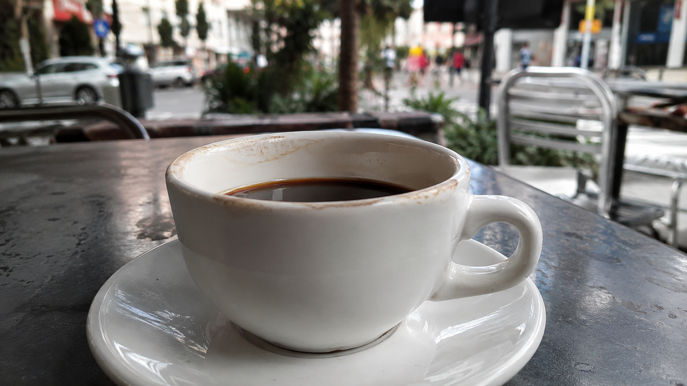

← BACK TO DOSSIERS LIST
REALISM CASE FILE // TREND: CREATING DEPTH OF FIELD: F/1.8 VS F/8 IN AI CAMERA PROMPTING
Photo-Realism Calibration: Reconstructing an Outdoor Coffee Cup Scene Beyond Default AI Aesthetics
DATE: 2026-07-27
STATUS: CALIBRATED_REALISM
ENGINE: CHATGPT DALL-E 3

SPECIMEN IMAGE #16:9 - CLEAN OPTICS
The image of a coffee cup on an outdoor table appears simple, yet it exposes one of the most persistent problems in modern image generation: default AI aesthetics. Many generated scenes drift toward spotless surfaces, exaggerated blur, hyper-clean lighting, and commercial advertising language. Real photography rarely behaves this way. Everyday captures contain environmental noise, material fatigue, uneven illumination, and countless small imperfections that make the image believable.
To understand why some coffee photographs feel authentic while others feel synthetic, we need to examine the physical structure of the scene layer by layer. The subject, environment, physics, time, and camera system each contribute measurable realism signals. However, the deeper calibration process goes beyond visual components alone. The true leverage comes from language-level transformations hidden inside the lexicon shift process, which acts as a calibration console for realism reconstruction and will become clear as we move through the film-style breakdown.
Lexicon shifts replace synthetic visual assumptions with physically observable behaviors. Instead of requesting cinematic lighting, calibration language specifies available daylight and ambient bounce. Instead of demanding perfect composition, it describes casual framing and spatial asymmetry. Technical calibration metrics focus on depth-transition behavior, highlight rolloff, material aging, reflection logic, environmental entropy, and sensor limitations. These changes reduce aesthetic optimization while increasing physical plausibility, resulting in images that behave more like photographs and less like idealized renderings.
This returns us to the original challenge: creating a coffee cup photograph that feels captured rather than generated. Mastering realism is rarely about adding more detail; it is about selecting more accurate language. The methodology behind these calibrations is explored in the ALPHA REALISM framework, where realism is treated as a system of observable behaviors rather than visual decoration. For creators seeking deeper control over camera-grade simulation, environmental fidelity, and lexicon-level calibration, the ALPHA REALISM Guide provides a structured path for turning generic prompts into physically grounded image instructions.
The 5 Layers of Reality Applied
Subject:
A ceramic coffee cup positioned near the front edge of an outdoor table, showing slight rim staining, faint condensation variation depending on beverage temperature, subtle reflections across the glazed surface, minor manufacturing imperfections in the ceramic finish, and naturally occurring asymmetry in the liquid surface. The cup remains the dominant subject while retaining ordinary, non-commercial presentation.
Environment:
Available daylight illumination with uneven ambient bounce from surrounding surfaces. Soft shadows fall across the tabletop with gradual luminance transitions. Background elements such as chairs, pedestrians, storefronts, foliage, or urban structures remain softly blurred but retain realistic tonal variation, depth layering, and environmental clutter. Lighting is observational rather than staged.
Physics:
Gravity governs liquid level stability and cup placement. Mild wind may introduce subtle movement in distant foliage and small shifts in reflected highlights. Reflections on the ceramic glaze respond to surrounding brightness gradients. Ambient atmospheric diffusion softens distant detail. Natural depth falloff creates progressive blur rather than artificial cutout separation.
Time:
Minor dust accumulation on the tabletop, faint wear marks in the table finish, subtle scratches, small discoloration from repeated outdoor use, and realistic material fatigue. The scene suggests ongoing everyday use rather than a newly prepared commercial setup.
Camera:
Close-focus capture using a smartphone-equivalent lens around 26-35mm full-frame equivalent. Slight edge softness, computational sharpening restraint, realistic depth transition, mild sensor noise in shadow regions, compressed microdetail in distant background elements, subtle highlight clipping, and ordinary digital image processing behavior.
The Lexicon Shift Table
| Appearance (Dead Adjective) |
|
Living Event (Cause & Effect) |
| perfect coffee advertisement |
➔ |
ordinary ceramic coffee cup showing minor surface wear and natural beverage residue |
| cinematic lighting |
➔ |
available daylight producing uneven ambient illumination and soft shadow transitions |
| ultra sharp details |
➔ |
localized sharpness concentrated on the cup with gradual optical falloff |
| beautiful bokeh |
➔ |
natural depth separation with imperfect environmental blur layering |
| spotless table |
➔ |
table surface showing subtle scratches, dust, and everyday use marks |
| hyperreal reflections |
➔ |
glazed ceramic reflections responding to surrounding light gradients |
| studio quality image |
➔ |
observational outdoor capture with realistic exposure variability |
| flawless composition |
➔ |
casual framing with ordinary spatial relationships and minor asymmetry |
Calibration Prompt Console
SUBJECT LAYER: close-up view of a ceramic coffee cup resting on an outdoor table, slight rim staining, realistic glazed ceramic reflections, subtle liquid surface variation, ordinary presentation without advertising styling, natural asymmetry and minor material imperfections. ENVIRONMENT LAYER: outdoor cafe or street-side seating area, softly blurred background containing realistic environmental clutter, distant chairs, foliage, storefronts, pedestrians or urban elements, available daylight, uneven ambient illumination, soft shadows, observational atmosphere. PHYSICS LAYER: gravity-controlled liquid surface, realistic reflective behavior on ceramic glaze, mild wind influence on distant background elements, atmospheric diffusion, natural optical depth separation, physically plausible highlight behavior. TIME LAYER: faint tabletop scratches, dust accumulation, minor wear marks, subtle discoloration from repeated use, authentic material aging, everyday environmental fatigue. CAMERA LAYER: smartphone-grade documentary photography, 26-35mm equivalent lens, close-focus acquisition, gradual depth falloff, slight edge softness, realistic sensor noise in darker regions, mild highlight clipping, restrained computational sharpening, ordinary digital processing, non-commercial realism, authentic observational capture --ar 16:9
Do you want to generate precise AI images?
Unlock our alpha realism blueprint, physical reliable framework to get the best of your creations with the ALPHA REALISM Guide.
Download Ebook Now